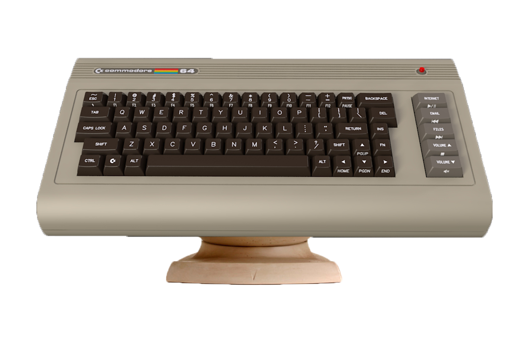
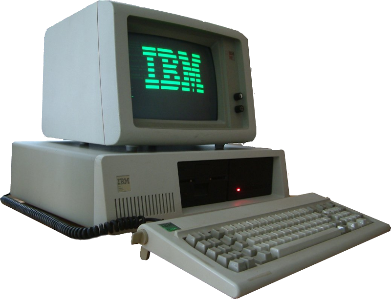
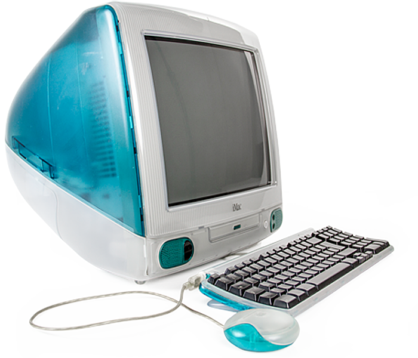
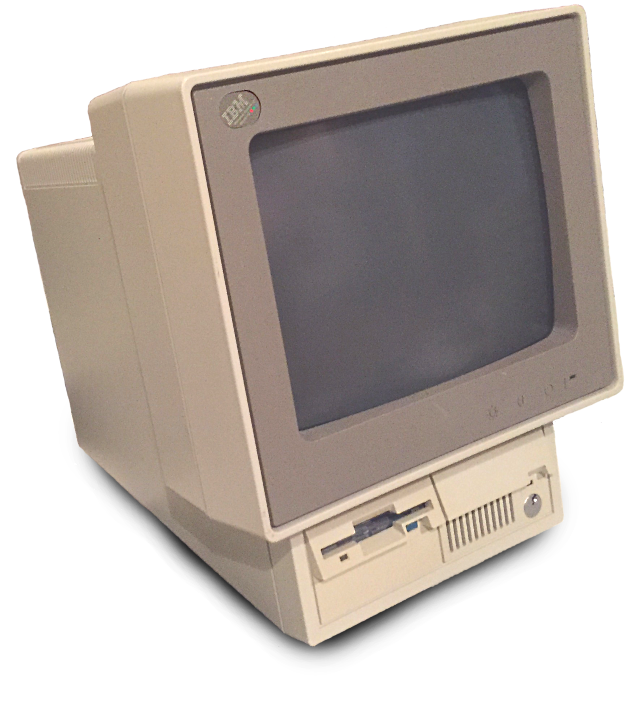
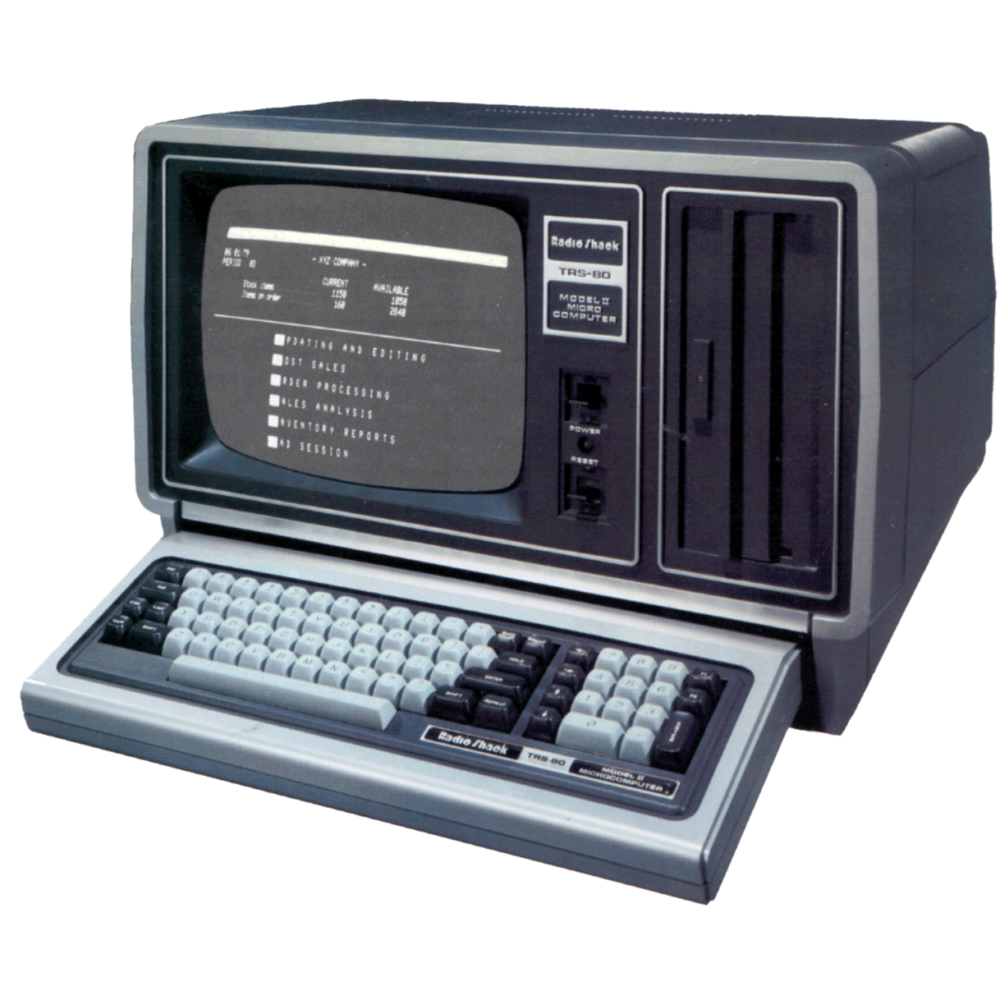

 En enero de 1981, MOS Technology, Inc., diseñadora de circuitos integrados subsidiaria de Commodore, inició un proyecto para diseñar los circuitos gráfico y de audio para la nueva generación de videoconsolas. El diseño de los circuitos, llamados VIC-II (gráficos) y SID (audio) fue completado en noviembre de 1981. Entonces se comenzó un proyecto para una videoconsola de Commodore que usara ambos circuitos, llamada Ultimax o Commodore MAX Machine, creada por Yashi Terakura de Commodore Japón. Este proyecto fue cancelado después de fabricarse algunas unidades para el mercado japonés. Al mismo tiempo, Robert "Bob" Russell, programador de sistemas y arquitecto del VIC-20, y Robert "Bob" Yannes, ingeniero del SID, eran críticos para la línea de productos de Commodore, la cual era una continuación de la línea PET, dirigida a usuarios de negocios. Con el apoyo de Al Charpentier, ingeniero del VIC-II, y de Charles Winterble, gestor de MOS Technology, propusieron a Jack Tramiel, oficial ejecutivo en jefe de Commodore, una verdadera secuela de bajo coste del VIC-20. Tramiel dictaminó que la máquina debía tener 64 KB de RAM. Aunque 64 KB de DRAM costaban más de 100 dólares en ese momento, Tramiel sabía que los precios caían y que muy pronto tendrían un precio aceptable antes de iniciarse la producción. En noviembre, Tramiel fijó como fecha de entrega el primer fin de semana de enero, para coincidir con el Consumer Electronics Show de 1982. El producto tenía el nombre en clave de VIC-40, al ser el sucesor del popular VIC-20. El equipo que lo construyó fue formado por Robert Russell, Robert Yannes y David A. Ziembicki. El diseño, los prototipos y algún software de prueba fue acabado a tiempo para el show, después de haber estado el equipo trabajando sin descanso incluso en los fines de semana del día de Acción de Gracias y Navidad. Cuando el producto iba a ser presentado, el VIC-40 fue renombrado a C64 para ajustarse a las líneas actuales de negocios de Commodore, las cuales incluían el P128 y el B256, ambos nombrados con una letra y su respectivo tamaño de memoria. El C64 tuvo una presentación impresionante, tal y como recuerda el ingeniero de producción David A. Ziembicki: "Todo lo que veíamos en nuestro pabellón era gente de Atari con la boca abierta, diciendo '¿Cómo pueden hacer esto por 595$?'". La respuesta era, según se vio, la integración vertical: gracias a ser Commodore la dueña de las plantas de fabricación de semiconductores de MOS Technology, cada C64 tenía un costo estimado de producción de solo 135 dólares. Commodore 64 (C64, CBM 64/CBM64, C=64,C-64, VIC-641) es una computadora doméstica de 8 bits desarrollada por Commodore International en agosto de 1982 a un precio inicial de 595 dólares. Sucede a la Commodore VIC-20 y a la Commodore MAX Machine, presentando 64 kilobytes (65.536 bytes) de RAM, con gráficos y sonido muy por encima de otros equipos contemporáneos. Utilizaba una unidad de casete además de una disquetera de tipo 5 1/4 pulgadas. Disponía de un teclado profesional muy robusto, distintas tomas de conexión y poseía infinidad de videojuegos, aplicaciones, gráficos y multimedia. Contaba con una paleta de 16 colores y un intérprete BASIC. Aceptaba la conexión directa de periféricos sin necesidad de una interfaz de conexión, (como alguno de sus más directos competidores) incorporando dos puertos de conexión de mandos de juego (joysticks), puertos serie IEC, RS232 y C2N, salida a televisión, salidas de vídeo compuesto y audio mediante conector DIN de alta fidelidad y un puerto de expansión para cartuchos. Algunos cartuchos incorporaban lenguajes de programación como COBOL, o un BASIC más avanzado, o expansión de RAM, más algunas utilidades para congelar los juegos y poder copiarlos. Su reloj funcionaba a menos de 1 Megahercio, pero sus excelentes capacidades gráficas y sonoras, hicieron de ella la computadora personal favorita de millones de usuarios caseros. Hoy en día existen programas que emulan su funcionamiento al completo, para GNU/Linux, Windows y otros sistemas operativos. El Commodore 64 sigue siendo el modelo de computadora doméstica más vendida en el mundo. Se estiman sus ventas entre 12,5 y 17 millones de unidades2
 6 años antes del IBM PC, IBM había lanzado su primer microcomputador de escritorio, el IBM 5100, introducido en 1975. Era un sistema completo, que tenía incorporado un monitor, un teclado y un almacenamiento de datos en una sola carcasa. Era también muy costoso - hasta $20 000. Se diseñó específicamente para los solucionadores de problemas profesionales y científicos, no para los usuarios empresariales o los aficionados.1 Nunca fue un computador personal. En 1975 fue introducido el Altair 8800 en un artículo de la edición de enero de la revista Popular Electronics, vendido en forma de kit. El Altair sorprendió a sus creadores cuando generó miles de encargos en su primer mes de venta. La introducción del Altair generó una industria entera basada en la diagramación básica y el diseño interno. Nuevas compañías como Cromemco comenzaron a ofrecer kits adicionales, mientras que Microsoft se fundó para suministrar un interpretador BASIC para los sistemas. Poco después, varios diseños de clones completos aparecieron en el mercado, tipificados por el IMSAI 8080. Esto generó la aparición de una amplia variedad de sistemas basados en el bus S-100 introducido con el Altair. El Altair se considera la chispa que condujo a la revolución del computador personal. En 1977 aparecieron tres microcomputadores que iniciaron una explosión en el mercado del computador doméstico: el Apple II de Apple Computer, el TRS 80 modelo I de Tandy y el Commodore PET de Commodore. Eran computadores fáciles de usar y fueron los primeros usados por la población en general. Pronto les siguieron otros computadores, como los primeros de la familia Atari de 8 bits, máquinas CP/M, diferentes modelos hechos por Tandy como los TRS 80 Modelos II y III y el TRS-80 Color Computer, el Texas Instruments TI-99/4A, el Commodore VIC 20 y otros. Cada vez se sumaban más empresas, tanto las ya establecidas como otras de nueva creación que producían computadores o todo tipo de periféricos, componentes, y software para microcomputadores. En 1978 apareció el WordStar, desarrollado originalmente para el CP/M, fue el procesador de palabras con más características y fácil de utilizar de los disponibles para este sistema operativo, y se convirtió en un estándar de facto. En 1979 apareció VisiCalc, la primera hoja de cálculo, considerada la aplicación que hizo que el microcomputador dejara de ser un pasatiempo para entusiastas de la computación y se convirtiera en una herramienta seria de negocios.2 Esto probablemente motivó a IBM a entrar en el mercado del PC, que ellos habían ignorado hasta entonces. También aparecieron los primeros videojuegos para computadores personales, los más populares eran Microchess, SARGON, Adventureland, Mystery House y Zork, entre otros. El mercado del microcomputador estaba creciendo muy rápidamente, pero IBM, la empresa de computación más grande del mundo y que entonces ofrecía desde minicomputadores hasta mainframes, todavía no participaba en este segmento. El desarrollo del IBM PC La línea original de PCs era parte de una estrategia de IBM para ingresar en el mercado de las computadoras domésticas, que hasta entonces había ignorado y estaba dominado por otros.3 El modelo original del IBM PC fue designado como el 5150, poniéndolo en la serie del "5100" que había lanzado en el año 1975, aunque su arquitectura no fue descendiente directa del IBM 5100. En vez de utilizar el habitual proceso de diseño de IBM, se reunió un equipo especial con autorización de saltar las restricciones normales de la compañía y rápidamente conseguir algo para el mercado. A este proyecto se le dio el nombre código de Project Chess (Proyecto Ajedrez) en el IBM Entry Systems Division en Boca Raton, Florida. El equipo consistió de doce personas dirigidas por Don Estridge con el Diseñador en Jefe, Lewis Eggebrecht.4
 Steve Jobs redujo las grandes líneas de productos de la compañía inmediatamente después de convertirse en el CEO interino de Apple en 1997. Hacia el final del año, Apple redujo su línea de Mac de escritorio de diez modelos distintos a cuatro modelos de Power Macintosh G3, que incluía el iMac inmediato predecesor, un exclusivo mercado educativo llamado Power Macintosh G3 All-In-One. Habiendo descontinuado la serie Performa dirigida al consumidor, Apple necesitaba un reemplazo para el precio de Performa. La compañía anunció el iMac el 6 de mayo de 1998 [1] y comenzó a enviar el iMac G3 el 15 de agosto de 1998. Internamente, el iMac era una combinación del proyecto MacNC y Common Hardware Reference Platform (CHRP). [Cita requerida] Aunque la promesa de CHRP nunca se ha cumplido completamente, el trabajo que Apple había hecho en CHRP ayudó significativamente en el diseño del iMac Un cambio de CHRP, por ejemplo, fue iniciar Mac OS clásico usando un archivo ROM de Mac OS de 4MB almacenado en el disco. El iMac original utilizaba un procesador PowerPC G3 (PowerPC 750), que también funcionaba en la línea Power Macintosh de gama alta de Apple en ese momento, aunque a velocidades más altas. Se vendió por US $ 1,299 y se envió con Mac OS 8.1, que pronto se actualizó a Mac OS 8.5. El iMac se actualizó continuamente después de su lanzamiento inicial. Además de aumentar las especificaciones (velocidad del procesador, RAM de video y capacidad del disco duro), Apple reemplazó a Bondi Blue con nuevos colores. A lo largo de su vida útil, el iMac se lanzó en un total de trece colores. Una actualización de hardware posterior creó un diseño más elegante. Este iMac de segunda generación presentaba una unidad óptica de carga por ranura, FireWire, operación "sin ventilador" (mediante enfriamiento por convección libre), una forma ligeramente actualizada y la opción de conexión inalámbrica en red AirPort. Apple continuó vendiendo esta línea de iMacs hasta marzo de 2003, principalmente a clientes que querían la capacidad de ejecutar el sistema operativo Mac OS 9 anterior. El soporte de USB y FireWire, y el soporte para acceso telefónico, Ethernet y redes inalámbricas (a través de 802.11by Bluetooth) pronto se convirtieron en estándar en toda la línea de productos de Apple. La adición de FireWire de alta velocidad corrigió las deficiencias de los iMacs anteriores. El modelo iMac CRT, ahora dirigido al mercado educativo, pasó a llamarse iMac G3 y se mantuvo en producción junto con su sucesor iMac G4 hasta que se lanzó el eMac. A medida que Apple continuó lanzando nuevas versiones de sus computadoras, el término iMac continuó usándose para referirse a las máquinas en su línea de escritorio de consumo
 El Personal System/2 o PS/2 es la tercera generación de ordenadores personales (PC) de IBM. Lanzada en 1987, fue creada por IBM en un intento de recapturar el control del mercado del PC introduciendo una arquitectura propietaria avanzada. Aunque la gran presencia en el mercado del Gigante Azul parecía asegurarle unas ventas muy numerosas, fracasó en su intento de devolver el control del mercado del PC a IBM. Debido a los altos costes de una arquitectura cerrada, los clientes preferían los PCs de la competencia que extendían la existente arquitectura del PC en lugar de abandonarla por algo nuevo. No obstante, muchas de las innovaciones del PS/2 como la unidad de disquete de 3,5 pulgadas HD (Alta Densidad, 1440 KiB), los SIMM (Single In-line Memory Module) de 72 pines, la nueva interfaz de teclado y ratón (puertos PS/2), y la tarjeta gráfica VGA, devinieron en estándar de los PCs. IBM diseñó los PS/2 para ser compatibles en software con la línea de ordenadores PC/AT/XT que originaron el gigantesco mercado del compatible IBM PC, pero muy diferentes en el hardware. Los PS/2 tienen dos BIOS. La primera, llamada ABIOS (Advanced BIOS) proporciona una nueva interfaz de modo protegido que es usado por OS/2. La segunda, llamada CBIOS (Compatible BIOS) se incluye sólo para que permanezcan compatible con los PC/AT/XT. Los IBM Personal System/2 introdujeron la Micro Channel Architecture (Arquitectura de Microcanal o MCA para abreviar) que es técnicamente superior al Bus ISA y diseñado para mantener una velocidad mayor de comunicación con el resto del sistema. El bus MCA presenta varios avances que no se verán en otros estándares de interfaz hasta varios años después. La velocidad de transferencia está a la par del muy posterior bus PCI. MCA permite manejo de transacciones uno a uno, tarjeta a tarjeta y multitarjeta a procesador simultáneamente, lo que es una prestación del bus PCI-X. Capacidad de Busmastering, arbitrio del bus y verdadero manejo plug-and-play del hardware por parte de la BIOS son beneficios del bus MCA. Además su arquitectura es de 32 bits, mientras que la de ISA es de 16 bits. Pese a todas esas ventajas técnicas, la Arquitectura Micro Channel nunca ganó amplia aceptación fuera de los PS/2 debido a las políticas anti-clon de IBM y a la incompatibilidad con ISA. IBM ofrecía una licencia Micro Channel a todo el que pudiera pagar el royalty, pero no sólo pedía un royalty por máquina fabricada con esa arquitectura, sino también un pago por cada compatible PC que el fabricante hubiera vendido tanto en el pasado como en el futuro.
 Anunciado en una rueda de prensa el 2 de febrero de 1977, el Tandy TRS-80 Modelo I fue el punto de entrada de Tandy Corporation en el mercado del computador casero, significando competir directamente contra el Commodore PET 2001 y el Apple II. Fue lanzado el 3 de agosto de 1977. Se vendía en $599 en la forma de un paquete que incluyó un monitor en blanco y negro de 12 pulgadas, grabador/reproductor de cassettes y la unidad central de procesamiento. Fue el producto más costoso que la cadena de tiendas de productos electrónicos de Tandy, Radio Shack, había ofrecido hasta entonces. La gerencia de la compañía estaba insegura de la atracción en el mercado que el computador podría tener y por ello mantuvo la producción inicial en sólo 3.000 unidades, de modo que si la computadora fallaba en venderse, pudiera por lo menos ser utilizada para propósitos de contabilidad dentro de los 3.000 almacenes de la cadena. Sin embargo, fue tal su éxito que Tandy terminó vendiendo 10.000 computadores el primer mes y 55.000 el primer año. Antes de descatalogarse en enero de 1981, se vendieron más de 250.000 unidades. El TRS-80 Modelo I fue desarrollado para Tandy por Don French y Steve Leininger. Su teclado era muy grueso en comparación con los que aparecieron en otras máquinas ya que los circuitos del computador estaban en la misma carcasa, ocultos justo debajo del teclado. Fue el primer computador hecho de esa manera, seguido 3 años después por el VIC-20 fabricado por Commodore. Tenía un microprocesador Zilog Z80 corriendo a 1,77 MHz. Primero apareció el TRS-80 Modelo I Level I, y pronto el TRS-80 Modelo I Level II. La diferencia entre estos modelos era el intérprete BASIC que residía en una memoria ROM. Ambos computadores venían con 4 KiB ó 16 KiB de RAM y con o sin teclado numérico. Se vendían kits para convertir un computador con el lenguaje BASIC Level I a Level II. Con el tiempo el TRS-80 Modelo I Level II con 16 KiB de memoria RAM se hizo común. Para expandir el computador se necesitaba comprar una "Expansion Interface" (Interfaz de Expansión). Había dos versiones del lenguaje de programación BASIC producidos para el Modelo I. El BASIC Level I que ocupaba 4K ROM, y BASIC Level II que ocupaba 12 KiB de ROM. El Level I realizaba solo cálculos de simple precisión y tenía un pequeño grupo de órdenes. El lenguaje BASIC Level II introdujo coma flotante de doble precisión y tenía un conjunto de órdenes más amplio. El Level II fue posteriormente mejorado cuando se agregó un sistema de discos, y el Disk Based BASIC era cargado. El BASIC Nivel I fue el lenguaje Tiny BASIC, producto de software libre creado antes de la aparición del movimiento del software libre y con copyleft incluido, creado por Li-Chen Wang, que fuera modificado por Tandy Corporation para añadirle funcionalidad. El BASIC Nivel II fue programado y licenciado a Microsoft. Debido a que el Modelo I tenía solo 12K de espacio de ROM, el BASIC Nivel II era una versión reducida del Extended BASIC de 16 KiB. Fue aproximadamente un 30% más rápido que el Level I. El Disk Based BASIC agregó la capacidad de realizar entradas y salidas de disco, y en algunos casos (como en los sistemas operativos NewDos/80, MultiDOS, DosPlus, LDOS) se agregaron características para clasificar y buscar archivos, edición de pantalla completa, entre otras. Microsoft también comercializó una versión mejorada del BASIC basada en cintas de casete llamada Level III BASIC. Esta agregó la mayoría de las funciones en la versión completa del Extended BASIC de 16 KiB.
Desarrollador= Santiago Herbes